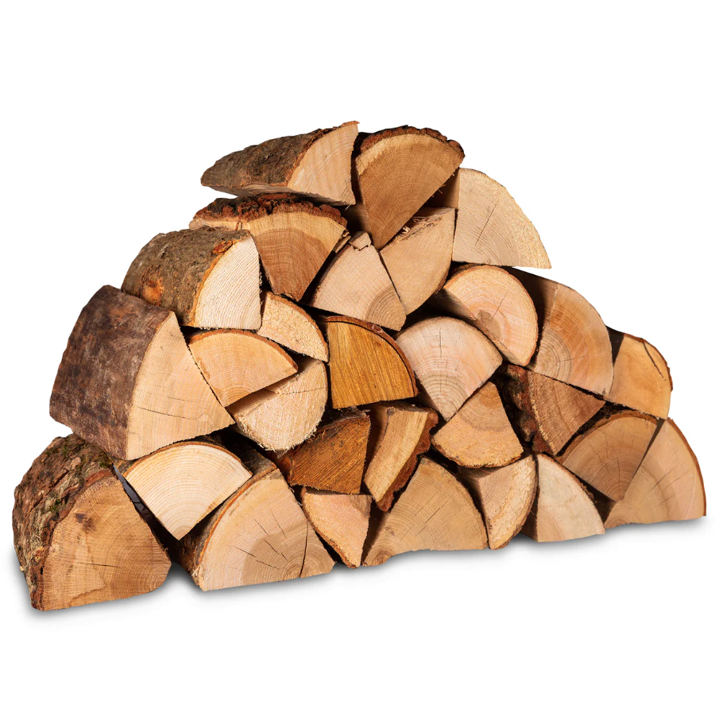
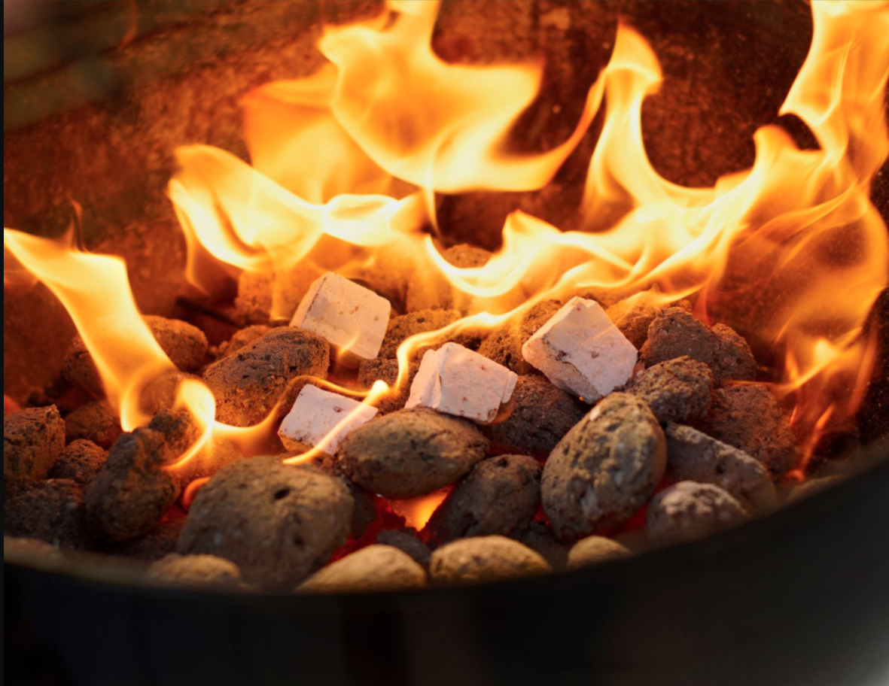
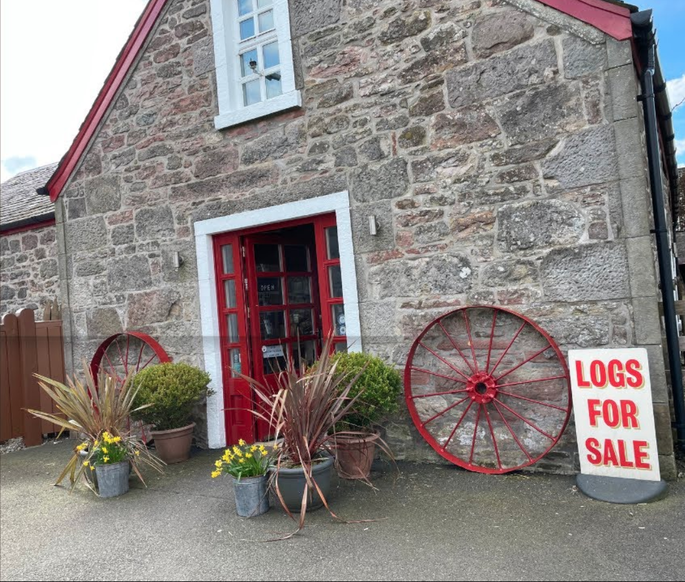

The service is provided for your enjoyment but you are responsible for safe and
appropriate use and complying with all laws. If there is any loss of service please
contact use.
Troubleshoot:Add any relevant information here (if lengthy dropdown added)
TV
The TV has a freeview sat box with lots of channels, Netflix, Prime etc. You will need to log in with your own streaming accounts and remember to log out when leaving.
The thermostat operates the heating in the hallway. Just adjust to the temperature you
want and the radiators will come on and cut out automatically when that temperature is
reached. You can adjust the radiators individually as well.
Hot Water
For the hot water, the timer is set to come on 4 times throughout the day, we have
never struggled for hot water with 6 people using the house but if you have any issues
please call us. Please do not touch the programmer in the utility room. Please also
beware that the boiler chimney/flue gets very hot and will melt anything sitting against it
with the potential to cause a fire, please do not cover or put things over it to dry.
Log Burner
There is a log-burning stove in the living room that you are welcome to use. There
are firelighters, kindling and logs for you to use in the basket.
You can buy more logs at the Auchentulloch Farm Shop or most petrol stations if you
need more.
Log burner in the living area

Logs for the fire

Firelighters provided

Local farm shop for extra supplies
Please do not leave the property with the log burner lit.
The fire guard must always be in place when the fire is on.
Please never dispose of ashes in the bin or outside until at least 24 hours after the fire
has fully gone out. You don’t need to worry about this during your stay — we’ll take care of
ash disposal during cleaning.
To operate the sauna there is an isolator switch on the corner of the cottage building,
the corner nearest the hot tub.
Step 1: Turn the isolator switch to the ON position.
You will see the sauna light come on.
Please do not touch the hot tub isolator switch (this is the switch on the left-hand side).
Step 2: Please wait approximately 20 minutes before entering the sauna.
Step 3: A bucket with a wooden spoon is provided. You may fill this with fresh water.
Please only use a small amount of water (around ¼ of the spoon).
Pouring large amounts of water on the stones can damage the heater and cause it to short circuit.
Step 4: Once finished, please turn the sauna isolator switch back to the
OFF position.
This helps us save energy. Please take care not to turn off the hot tub by mistake.
There is a washing machine and a dryer located in the pantry area at the back of the house.
Please feel free to use these during your stay.
Kitchen Equipment
A coffee machine is provided, with pods readily available for you in the kitchen.
Dishwasher Instructions
The dishwasher is located next to the fridge. Place all items inside, select your desired
setting, and firmly close the door — the cycle will start automatically.
Outdoor Pizza Oven
There is a set of instructions provided in the cottage explaining how to use the pizza oven.
Please follow these carefully.
Important: Only kiln-dried wood should be used in the pizza oven.
It is not a fire pit — please do not burn plastic or general rubbish.
After use, embers may take up to 24 hours to fully cool.
Do not clean the inside of the oven with water or cleaning products — use only a dry brush.
The high heat naturally sanitises the oven.
If you are staying in the property for more than 7 nights, we kindly ask that you test the smoke alarms and inform us if there are any issues.
To test the alarms, press the button on the front of one detector. This will activate all alarms for approximately 20 seconds.
Carbon Monoxide (CO) Alarm:
If the CO alarm sounds (a loud continuous alarm), immediately evacuate the property, open doors and windows for ventilation, and call:
Gas Emergency Helpline: 0800 111 999
Seek medical advice if you suspect carbon monoxide poisoning
Emergency Phone Numbers
Property-related emergencies:
Property Emergency Line: 0141 264 2444
Alternatively, contact John: 07960 128469
Please do not delay if you feel an emergency situation has arisen.
Personal emergencies (guest health or safety):
Emergency services: 999
Police non-emergency: 101
Health Services
Pharmacists (known as chemists in Scotland) can dispense a limited range of medication without a doctor’s prescription. Most pharmacies operate during standard shop hours.
A late-opening pharmacy is available at Glasgow Central Station, open until midnight.
If your condition requires immediate attention, you can attend:
Minor Injuries Units
Accident & Emergency (A&E) departments at local hospitals
Emergency medical assistance:
Ambulance: 999
NHS 24 (24-hour medical advice): 111
These services are free to all.
Safety in Glasgow
Glasgow is generally a safe city. As with any large city, please follow normal safety precautions.
If something is stolen or an incident needs reporting:
Police non-emergency: 101
Emergency situations: 999
Electricity Information
The electricity supply is the European standard of approximately 230V AC.
All sockets use British three-pin plugs:
North American appliances require a transformer and adapter (unless otherwise stated)
Australasian appliances require an adapter only
Fire Safety & Prevention
General Fire Safety
Please keep all doors closed when not in use, especially at night
Do not use electrical appliances (especially the washing machine) overnight or when the property is unoccupied
Important Rules
Smoking is not permitted inside the property
Please do not light candles indoors
If using portable heaters, keep them well away from flammable materials and unplug when not in use
In the Event of a Fire
If possible, close the door to the room containing the fire
Close all doors behind you as you leave
Leave all belongings behind
Use the stairs — do not use lifts
Before opening a closed door, check if it feels warm — if it does, do not open it
If there is heavy smoke, stay low and cover your nose and mouth with a cloth
If you must break a window to escape, cover sharp edges with cloth and throw bedding outside to cushion your fall
Once outside, move to a safe location across the street and call 999.
All rubbish and recycling should be put in the bins at the bottom of the driveway. The
blue bins are for recycling, the grey bin for glass and the green bin is for general
waste.
Recycle
The local council only recycle a select few things so please check the top of the
bin before putting anything in it. They will not empty the bin if it has incorrect items in
it -There are small baskets under the kitchen sink for recycling.
Back to Menu
Check-Out
Check-out Process
I hope you have had a lovely stay!
Please complete the following before checking out:
Wash any dirty dishes
Empty the bin and any recycling
Remove any perishable food from the fridge
Place all used towels in the bath
Ensure all appliances are switched off
Turn off the heating at the thermostat
Please return the keys where you collected them
It is important that you check out on time, as our cleaners need access to prepare
the apartment for the next guests.
Safe travels!
Check-out Time
Check-out time is strictly 10:00am.
If you require a later check-out, please contact us before 6pm and we will do our best to
accommodate your request.
If an unauthorised late check-out delays our cleaners, an additional charge of
£25 will apply.
Leave Us a Review
We hope you had a lovely stay. If you did, we’d really appreciate it if you could leave
us an online review.
Thank you — we’ll be forever grateful!
Looking to Book Again?
If you’ve enjoyed your stay and plan to return to Glasgow, we’d be happy to offer you
a discounted rate.
Please message us through the original booking platform.